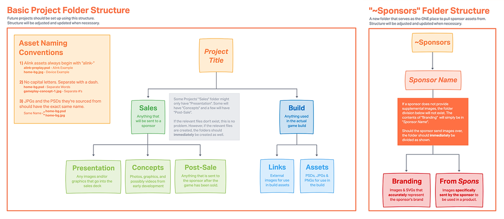
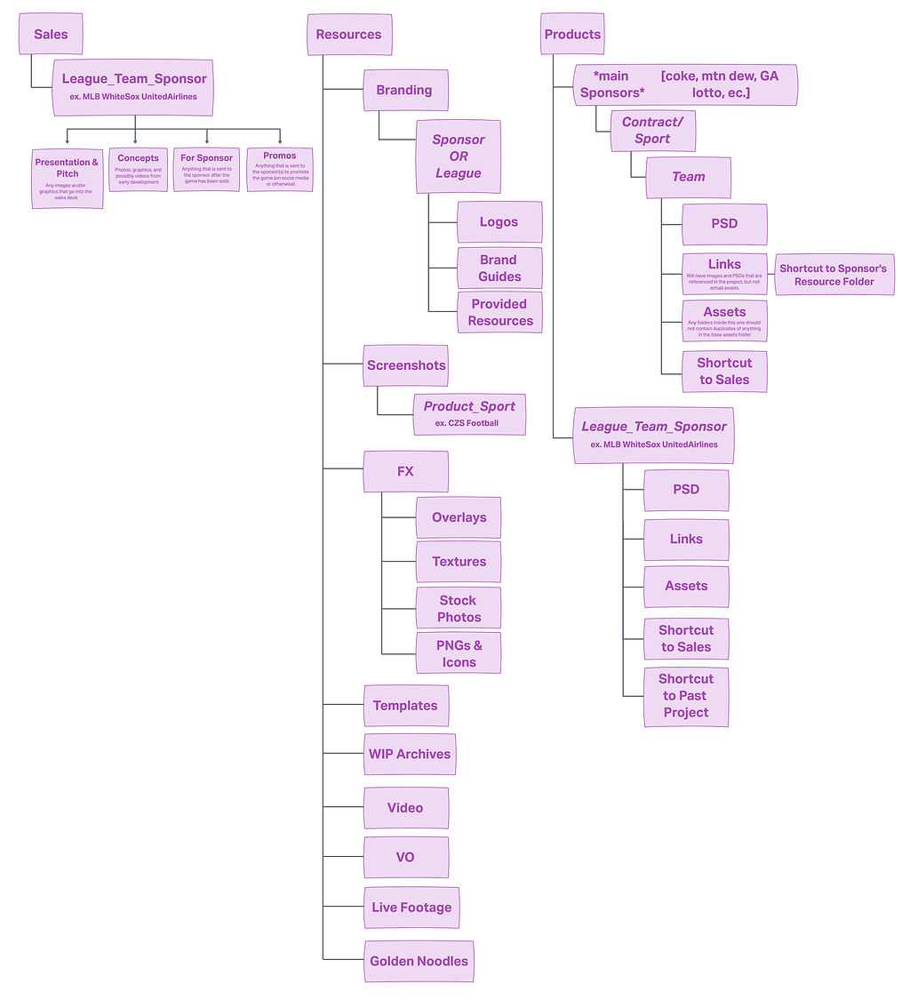
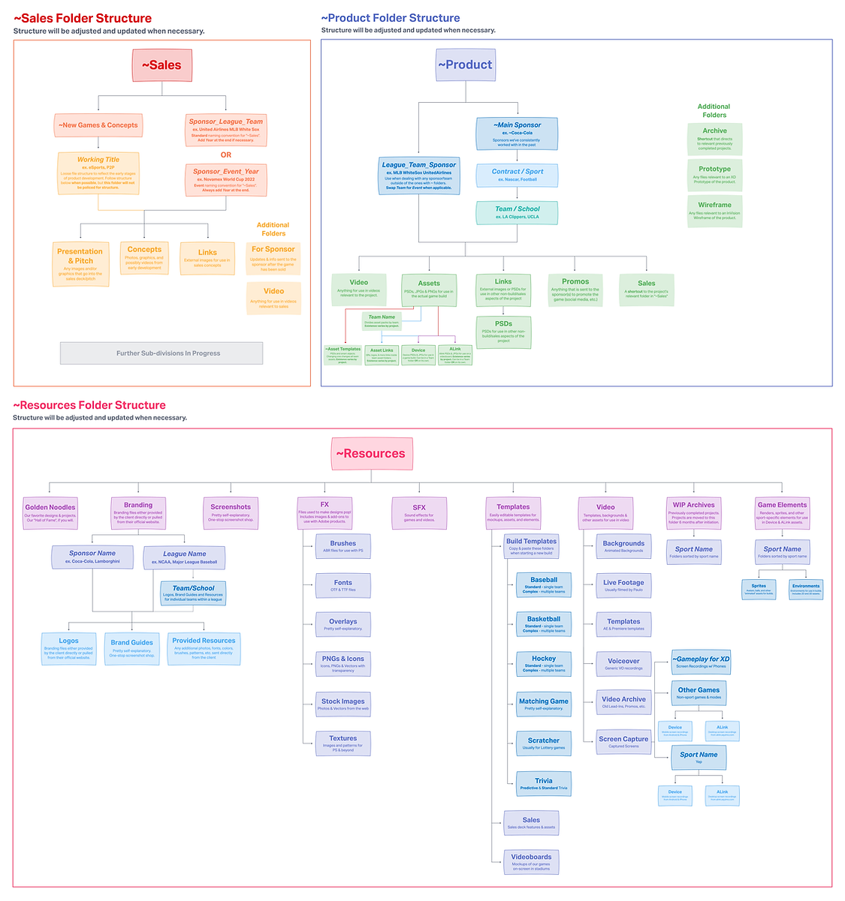

Aquimo, Inc. creates browser-based gamification marketing products for clients in the sports & beverage industries.
InVision, Microsoft Teams
Over the last few years, the Aquimo Design Team has accumulated thousands of assets, spread across hundreds of folders. Since a standard file structure was never implemented, these folders became extremely difficult to navigate as the company began growing their client base and enhancing their products.
Increase employee productivity and efficiency by standardizing internal folder and file structures
For this project, rather than diving head-on into project management research, I chose to start by observing how the employees reacted to and interacted with the existing file structure. Over the course of 8 months, I was present for daily Skype/Teams calls and messages with the design team. All of these interactions were filled with location inquiries, file name requests, and general uncertainty. Often, it would be impossible to start a project without seeking direction from senior managers, who worked remotely. Several work hours over those 8 months were spent simply waiting for clarification or approval. I also noticed that several employees did not respond well to change. The company decided to switch from Skype to Microsoft Teams in November 2021. As of April 2022, there were still employees using Skype, despite being asked by upper management to make the switch.
Using InVision, I created the following basic flows as a starting point.
These flows were built to be flexible. Considering the number of files I’d been tasked with organizing, I consulted with other members of the design team to discuss which additional folders we could add while keeping the structure as simple as possible. This next iteration is shown below.
After further discussing the folders with fellow members and management of the design team, we eventually settled on the following final flows. While I anticipate them changing slightly as implementation continues, these flows accurately depict the most important aspects of the new structure.
As of April 2022, implementation of this structure is still underway. However, the use of these flows has allowed several users to accurately organize & label hundreds of folders and files, resulting in an increase in productivity. I will update this section with my post-implementation observations and conclusions as soon as the project is complete.
🠬 Back to Commercial Projects